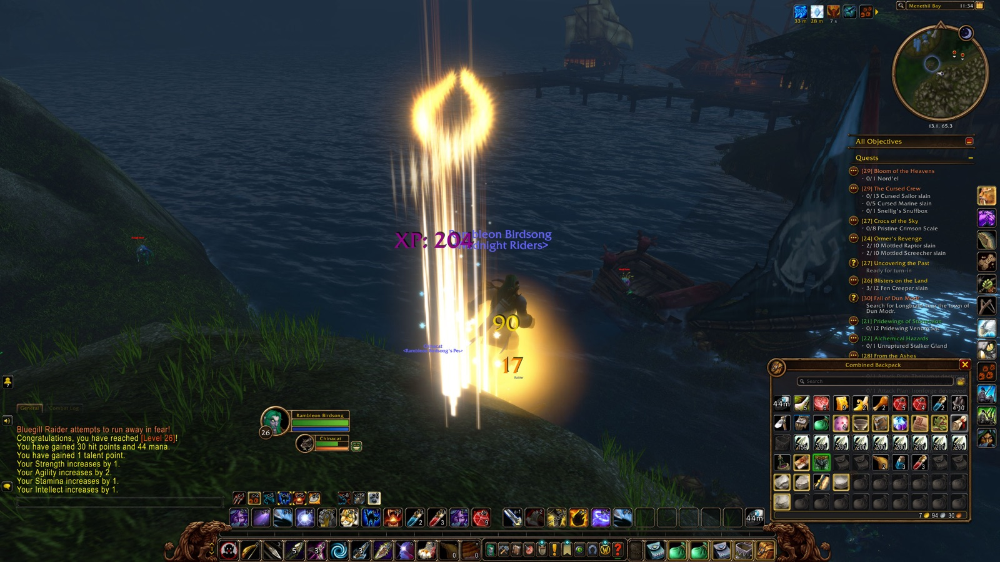
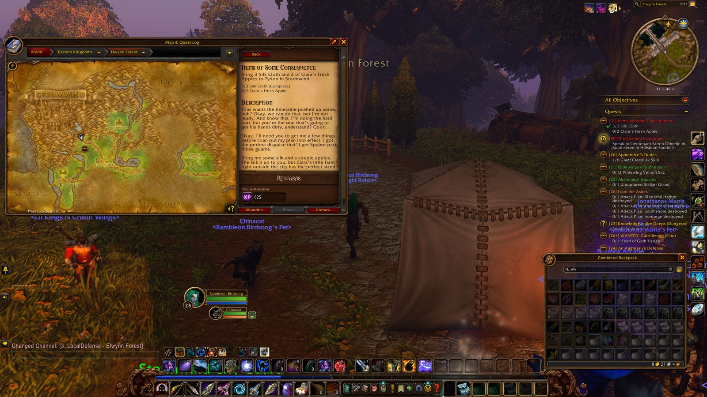
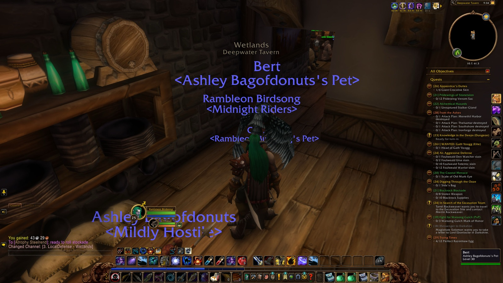

Rambleon All chapters The season Route guide About Rambleon Chapter 7 — Black Channel Marsh
Rambleon Birdsong · November 13, 2026 · 3h 13m in Azeroth

11:34 PM — Reached Level 26 in Menethil Bay 3h 13m in Azeroth tonight.
1 level.
12 quests.
22 places.
118 enemies slain.
1 deaths.
4 travelling companions.
Ramble on.
12 Quests
22 Places
118 Enemies slain
9 Loot
1 Deaths
4 People
34,311 XP
9 Lines of roleplay
Quests Turned in12 Still open8 Carrying28
Quest Turned in at Lv Stormwind City A Friend of the Family Cathedral of Light 25 Infiltrating the Castle Stormwind Keep 25 Items of Some Consequence Stormwind Keep 25 Wetlands Fire Taboo The Green Belt 25 In Search of the Excavation Team ×2 Menethil Harbor 25 Digging Through the Ooze Menethil Harbor 25 Apprentice's Duties Menethil Harbor 25 The Third Fleet Menethil Harbor 25 Bloom of the Heavens Menethil Harbor 26 Ormer's Revenge Whelgar's Excavation Site 26 Uncovering the Past Whelgar's Excavation Site 26
Quest Picked up at The Shamed Lieutenant Cathedral of Light Fall of Dun Modr Menethil Harbor Blisters on the Land The Green Belt Crocs of the Sky Menethil Harbor The Cursed Crew Menethil Harbor Bloom of the Heavens Menethil Harbor Ormer's Revenge Whelgar's Excavation Site Understanding Our Present Whelgar's Excavation Site
Quest Picked up at Since On Guard in Stonetalon Astranaar Chapter 1 The Tower of Althalaxx Maestra's Post Chapter 1 ... and that note you found Alexston Farmstead Chapter 2 WANTED: Gath'Ilzogg Lakeshire Chapter 2 WANTED: Incinerator Gar'im Lakeshire Chapter 2 Messenger to Darkshire Lakeshire Chapter 2 Gyrodrillmatic Excavationators Dwarven District Chapter 3 Claiming Arathi Basin Stormwind Keep Chapter 3 Save Techbot's Brain! Tinker Town Chapter 3 Find Bingles Tinker Town Chapter 3 The Day After Tinker Town Chapter 3 Knowledge in the Deeps The Forlorn Cavern Chapter 4 What Comes Around... Lakeshire Chapter 4 Pridewings of Stonetalon Astranaar Chapter 5 Culling the Threat Astranaar Chapter 5 Bathran's Hair Maestra's Post Chapter 5 Blackfathom Villainy The Pool of Ask'ar Chapter 5 An Aggressive Defense Astranaar Chapter 5 Raene's Cleansing Astranaar Chapter 5 War Banners Menethil Keep Chapter 5 From the Ashes Menethil Keep Chapter 5 Alchemical Hazards Menethil Harbor Chapter 5 Lost in the Thicket Things Menethil Harbor Chapter 6 Highland Hides Menethil Harbor Chapter 6 Razormaw Needling Wetlands Chapter 6 Trying Times Wetlands Chapter 6 The Color of Blood Old Town Chapter 6 Oh Brother... Dwarven District Chapter 6
As far as Rambleon knows: a quest picked up before it was installed, or abandoned before it recorded that, is not here.
Scenes 10:12 PM A scene in Ironbeard's Tomb with Marika Aonami
Rambleon Birdsong “wanna kill these?”
Marika Aonami “kj”
Marika Aonami “k*”
10:29 PM A scene in Whelgar's Excavation Site with Chow Doozlin
Chow Doozlin “lfg?”
Rambleon Birdsong “lfg”
Chow Doozlin “for these quests?”
Rambleon Birdsong “i dont have them yet i think i get at l26”
The Journey 196 moments, in order · fold
7:07 PM — Began the adventure
7:08 PM — Entered Trade District (Stormwind City)
7:10 PM — Entered The Canals (Stormwind City)
7:10 PM — Entered Cathedral Square (Stormwind City)
7:10 PM — Entered The Canals (Stormwind City)
7:11 PM — Entered Cathedral Square (Stormwind City)
7:11 PM — Entered Cathedral of Light (Stormwind City)
7:12 PM — Looted Knight's Lance (Uncommon)
7:12 PM — Completed "A Friend of the Family"
7:12 PM — Accepted "The Shamed Lieutenant"
7:12 PM — Entered Cathedral Square (Stormwind City)
7:12 PM — Entered The Canals (Stormwind City)
7:13 PM — Entered Stormwind Keep (Stormwind City)
7:14 PM — Completed "Infiltrating the Castle"
7:14 PM — Accepted "Items of Some Consequence"
7:15 PM — 3/3 Silk Cloth — "Items of Some Consequence"
7:18 PM — Entered Royal Gallery (Stormwind City)
7:18 PM — Entered Stormwind Keep (Stormwind City)
7:18 PM — Entered The Canals (Stormwind City)
7:19 PM — Entered Old Town (Stormwind City)
7:20 PM — Entered The Canals (Stormwind City)
7:21 PM — Entered Trade District (Stormwind City)
7:21 PM — Entered Valley of Heroes (Stormwind City)
7:21 PM — Entered Elwynn Forest

7:21 PM — Entered Elwynn Forest 7:22 PM — 2/2 Clara's Fresh Apple — "Items of Some Consequence"
7:23 PM — Entered Valley of Heroes (Stormwind City)
7:23 PM — Entered Trade District (Stormwind City)
7:24 PM — Entered The Canals (Stormwind City)
7:25 PM — Entered Stormwind Keep (Stormwind City)
7:25 PM — Completed "Items of Some Consequence"
7:26 PM — Entered The Canals (Stormwind City)
7:26 PM — Entered Dwarven District (Stormwind City)
7:28 PM — Learned |cff71d5ff|Hspell:1462:0|h[Beast Lore]|h|r
7:28 PM — Learned Beast Lore
7:28 PM — Learned Raptor Strike
7:28 PM — Learned Track Hidden
7:31 PM — Learned |cff71d5ff|Hspell:4198:0|h[Great Stamina (Rank 4)]|h|r
7:31 PM — Learned |cff71d5ff|Hspell:24558:0|h[Natural Armor (Rank 4)]|h|r
9:20 PM — Entered Dwarven District (Stormwind City)
9:24 PM — Entered The Canals (Stormwind City)
9:25 PM — Entered Trade District (Stormwind City)
9:33 PM — Entered The Canals (Stormwind City)
9:34 PM — Hearthed home to Deepwater Tavern
9:34 PM — Entered Deepwater Tavern (Wetlands)

9:34 PM — Entered Wetlands 9:34 PM — Entered Menethil Harbor (Wetlands)
9:35 PM — Accepted "Fall of Dun Modr"
9:35 PM — Entered Menethil Bay (Wetlands)
9:35 PM — Entered Wetlands
9:35 PM — Entered Menethil Bay (Wetlands)
9:35 PM — Entered Wetlands
9:35 PM — Entered Bluegill Marsh (Wetlands)
9:36 PM — Entered Sundown Marsh (Wetlands)
9:37 PM — First Mosshide Fenrunner slain
9:38 PM — First Young Wetlands Crocolisk slain
9:40 PM — First Mosshide Trapper slain
9:42 PM — First Mosshide Brute slain
9:42 PM — Looted Shimmering Trousers of Intellect (Uncommon)
9:44 PM — Looted Massive Battle Axe of Agility (Uncommon)
9:45 PM — Joined forces with Mia (Hunter)
9:45 PM — Parted ways with Mia
9:51 PM — 9/9 Crude Flint — "Fire Taboo"
9:52 PM — First Wetlands Crocolisk slain
9:52 PM — Entered Wetlands
9:54 PM — Entered The Green Belt (Wetlands)
9:55 PM — Completed "Fire Taboo"
9:56 PM — Accepted "Blisters on the Land"
9:57 PM — First Fen Creeper slain
9:58 PM — Entered Wetlands
9:59 PM — Entered Ironbeard's Tomb (Wetlands)
10:01 PM — First Black Ooze slain
10:12 PM — A scene in Ironbeard's Tomb with Marika Aonami (3 lines) 10:12 PM — Joined forces with Marika (Paladin)
10:12 PM — First Crimson Ooze slain
10:13 PM — First Monstrous Ooze slain
10:14 PM — 1/1 Sida's Bag — "Digging Through the Ooze"
10:14 PM — Parted ways with Marika
10:15 PM — Entered Wetlands
10:16 PM — First Dragonmaw Raider slain
10:18 PM — Entered Sundown Marsh (Wetlands)
10:19 PM — First Mottled Raptor slain
10:19 PM — Entered Wetlands
10:20 PM — Looted Skycaller (Rare)
10:22 PM — Discovered Whelgar's Excavation Site
10:22 PM — Discovered Whelgar's Excavation Site
10:22 PM — Entered Whelgar's Excavation Site (Wetlands)
10:22 PM — Entered Wetlands
10:28 PM — Entered Sundown Marsh (Wetlands)
10:29 PM — Entered Wetlands
10:29 PM — Entered Whelgar's Excavation Site (Wetlands)
10:29 PM — A scene in Whelgar's Excavation Site with Chow Doozlin (4 lines) 10:29 PM — Joined forces with Chow (Priest)
10:30 PM — Abandoned "Journey to Stonetalon Peak"
10:30 PM — Accepted "Uncovering the Past"
10:31 PM — First Mottled Scytheclaw slain
10:32 PM — 1/1 Golm Fragment — "Uncovering the Past"
10:34 PM — First Mottled Razormaw slain
10:34 PM — 1/1 Neru Fragment — "Uncovering the Past"
10:39 PM — 1/1 Modr Fragment — "Uncovering the Past"
10:48 PM — Abandoned "The Coastal Menace"
10:48 PM — Accepted "Ormer's Revenge"
10:49 PM — Abandoned "Blackrock Blockade"
10:49 PM — Completed "In Search of the Excavation Team"
10:49 PM — Accepted "In Search of the Excavation Team"
10:49 PM — Return to Tarrel Rockweaver with Merrin's note. — "In Search of the Excavation Team"
10:59 PM — Looted Battlesmasher of Magic (Uncommon)
11:03 PM — Joined forces with Back (Hunter)
11:04 PM — 1/1 Ados Fragment — "Uncovering the Past"
11:05 PM — Entered Wetlands
11:05 PM — Parted ways with Chow
11:05 PM — Parted ways with Back
11:06 PM — Entered Sundown Marsh (Wetlands)
11:06 PM — Entered Wetlands
11:07 PM — First Mottled Screecher slain
11:07 PM — Entered Sundown Marsh (Wetlands)
11:08 PM — Entered Bluegill Marsh (Wetlands)
11:08 PM — Entered Sundown Marsh (Wetlands)
11:09 PM — Entered Saltspray Glen (Wetlands)
11:09 PM — First Giant Wetlands Crocolisk slain
11:09 PM — Entered Baradin Bay (Wetlands)
11:14 PM — Entered Saltspray Glen (Wetlands)
11:14 PM — Entered Baradin Bay (Wetlands)
11:14 PM — Entered Saltspray Glen (Wetlands)
11:15 PM — Entered Sundown Marsh (Wetlands)
11:15 PM — 6/6 Giant Crocolisk Skin — "Apprentice's Duties"
11:17 PM — Hearthed home to Deepwater Tavern
11:17 PM — Entered Deepwater Tavern (Wetlands)
11:22 PM — Entered Menethil Harbor (Wetlands)
11:22 PM — Completed "Digging Through the Ooze"
11:23 PM — Completed "In Search of the Excavation Team"
11:24 PM — Looted Malleable Chain Leggings (Uncommon)
11:24 PM — Completed "Apprentice's Duties"
11:24 PM — Accepted "Crocs of the Sky"
11:25 PM — Entered Deepwater Tavern (Wetlands)
11:25 PM — 1/1 Flagon of Dwarven Honeymead — "The Third Fleet"
11:25 PM — Entered Menethil Harbor (Wetlands)
11:25 PM — Completed "The Third Fleet"
11:25 PM — Accepted "The Cursed Crew"
11:26 PM — Entered Menethil Bay (Wetlands)
11:27 PM — Entered Wetlands
11:28 PM — Entered Menethil Bay (Wetlands)
11:28 PM — Entered Menethil Harbor (Wetlands)
11:29 PM — Entered Menethil Bay (Wetlands)
11:29 PM — First Bluegill Raider slain
11:32 PM — Entered Wetlands
11:32 PM — Entered Menethil Bay (Wetlands)
11:32 PM — Entered Wetlands
11:32 PM — Entered Menethil Bay (Wetlands)
11:34 PM — Reached Level 26
11:35 PM — 1/1 Nord'el — "Bloom of the Heavens"
11:35 PM — Entered Menethil Harbor (Wetlands)
11:35 PM — Entered Menethil Bay (Wetlands)
11:35 PM — Entered Menethil Harbor (Wetlands)
11:36 PM — Completed "Bloom of the Heavens"
11:36 PM — Looted Bouquet of Auberdine Flowers (Uncommon)
11:36 PM — Accepted "Bloom of the Heavens"
11:36 PM — Bring Nord'el to Thundris Windweaver in Auberdine in Darkshore.
You recall Sylessa mentioning a boat in Menethil Harbor can take you there. — "Bloom of the Heavens"
11:37 PM — Entered Baradin Bay (Wetlands)
11:39 PM — Entered Menethil Harbor (Wetlands)
11:41 PM — Entered Menethil Bay (Wetlands)
11:41 PM — Entered Wetlands
11:42 PM — Entered Bluegill Marsh (Wetlands)
11:43 PM — First Fen Dweller slain
11:43 PM — Entered Wetlands
11:43 PM — Discovered Black Channel Marsh
11:43 PM — Discovered Black Channel Marsh
11:43 PM — Entered Black Channel Marsh (Wetlands)
11:47 PM — Looted Bright Belt (Uncommon)
11:48 PM — Entered Wetlands
11:48 PM — Entered Black Channel Marsh (Wetlands)
11:49 PM — Entered Wetlands
11:53 PM — Learned |cff71d5ff|Hspell:1265833:0|h[Savage Rend]|h|r
11:54 PM — Entered Black Channel Marsh (Wetlands)
11:55 PM — 10/10 Mottled Raptor slain — "Ormer's Revenge"
11:57 PM — 10/10 Mottled Screecher slain — "Ormer's Revenge"
11:58 PM — Entered Bluegill Marsh (Wetlands)
11:58 PM — Entered Sundown Marsh (Wetlands)
11:59 PM — Entered Wetlands
11:59 PM — Entered Whelgar's Excavation Site (Wetlands)
11:59 PM — Completed "Ormer's Revenge"
12:00 AM — Accepted "Ormer's Revenge"
12:00 AM — Completed "Uncovering the Past"
12:00 AM — Looted Silk Mantle of Gamn (Uncommon)
12:00 AM — Accepted "Understanding Our Present"
12:02 AM — Slain by Mottled Razormaw in Whelgar's Excavation Site
12:02 AM — Entered Wetlands
12:02 AM — Back among the living
12:03 AM — Entered Sundown Marsh (Wetlands)
12:04 AM — Entered Wetlands
12:04 AM — Entered Bluegill Marsh (Wetlands)
12:05 AM — Entered Wetlands
12:06 AM — Entered Menethil Bay (Wetlands)
12:06 AM — Entered Menethil Harbor (Wetlands)
12:08 AM — Entered Deepwater Tavern (Wetlands)
↑ Back to top
Recorded by Rambleon · session night-2026-11-13-rambleon-birdsong-camwow-us2-realm-3-pve